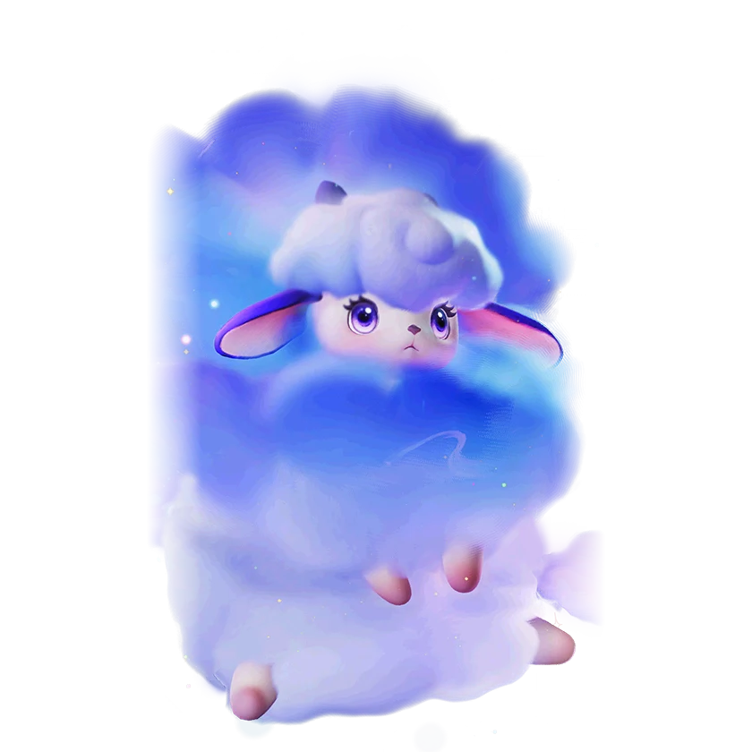

รายชื่อ Aniimo › #019

แกะแดนฝัน (Dreaple)
#019ธาตุมืดNovaSupportTier A
ขนของพวกมันที่ดูดซับพลังงานแห่งความฝันไว้ ก่อให้เกิดภาพลวงตาของสีสันที่น่าหลงใหล เมื่อนำขนนี้มาทำเป็นหมอน ผู้เบิกทางก็จะหลับใหลไปในความฝันอันแสนหวาน
ดูรายละเอียดเต็ม ร่างพิเศษ และร่างเปล่งประกายค่าสถานะพื้นฐาน
| HP | 100 |
|---|---|
| ATK | 110 |
| P.DEF | 77 |
| M.DEF | 103 |
| REGEN | 80 |
| BREAK | 50 |
สกิล
| โจมตีปกติ | ATK มืด ใช้พลังความมืดโจมตีเป้าหมายจากระยะไกล |
| สกิล 1 | Nightmare Devourer มืด ฟื้น HP 5% ให้ตัวเองและเพื่อนรอบตัว แล้วดูดซับ [Nightmare] จากเป้าหมายรอบข้าง ทุก [Nightmare] ที่ดูดซับเพิ่มการฮีล 2% สูงสุด 3 สแต็ก |
| สกิล 2 | Hypnotic Cloud Shot มืด ยิงกระสุนเมฆหลับใหลใส่เป้าหมาย เมื่อระเบิดจะสร้างดาเมจแก่เป้าหมายในพื้นที่ และติด [ง่วงซึม] 1 สแต็ก |
| สกิล 3 | Nimbi Attack มืด อัญเชิญแกะปุยเมฆที่ติดตามผู้ใช้สกิล พร้อมทำดาเมจใส่เป้าหมายที่อยู่ในเส้นทางและติดสถานะ [ง่วงซึม] 1 สแต็ก เมื่อโดนผู้ใช้สกิล แกะปุยเมฆจะพุ่งกลับไปหาเป้าหมาย |
| อัลติเมต | Dream Blast มืด ทำดาเมจเป้าหมายในระยะและติด [Drowsiness] 2 สแต็ก เพิ่มดาเมจธาตุมืดของทั้งทีม 20% (+1.9% ต่อ ATK 100 สูงสุด 35%) เป็นเวลา 30 วินาที |
สายวิวัฒนาการ
- แกะปุยเมฆ → แกะแดนฝัน (แอนีโมเลเวล 21, พักผ่อนกับผู้เบิกทางตั้งแต่กลางคืนถึงกลางวัน, เรียนรู้พรสวรรค์ติดตัว [เพลงบรรเลงฝัน])
Held Item ที่แนะนำ
- Spirited Feather แอนีโมที่ติดตั้งจะได้รับพลังฟื้นฟูเพิ่ม 0.7 หน่วยต่อเลเวล
- Auspicious Bell เมื่อใช้สกิล มีโอกาส 20% ที่จะได้รับ 5 EP
งานใน Homeland
งานธาตุมืด Lv.3, สันทนาการ Lv.3